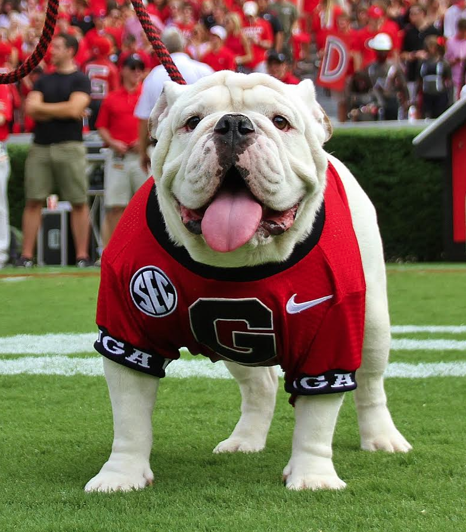

I hadn't always though I would say those words. Choosing to attend UGA wasn't an easy decision for me by any means. Growing up in Pennsylvania, my parents had hoped that I would attend a school such as the University of Pittsburgh. But I had a different plan; I wanted to move south. However, I had a very hard time making this decision because it was difficult to find a clear comparison of the two schools. I made this page to compare common factors that should be considered when choosing a college to attend, and to demonstrate some of my reasons for choosing the University of Georgia.
| School | Ranking | Location | Undergrad Enrollment | Cost |
|---|---|---|---|---|
| Univ. of Georgia | 56 | Athens,GA | 27,547 | $29,844 |
| Univ. of Pittsburgh | 68 | Pittsburgh,PA | 18,908 | $18,618 |
As demonstrated by the table, UGA is ranked 12 spots higher than Pitt. While 12 may not seem very significant, consider that this is out of every public university in the nation. In addition to rank, I was looking for a school with a lot of people, especially where I could have a fresh start and meet a lot of new people. Each year, roughly 100 students from my alma mater attend the University of Pittsburgh. As a person seeking to branch out and gain new experiences, this number was a big factor in deciding to lean toward the University of Georgia. On top of the reason's I have listed here, I was also promised a scholarship to UGA, which would bring the costs to almost equal. Once I toured each school and considered all important factors, I decided that the University of Georgia would be my home for the next four years. Once I made this choice and settled into UGA, I realized I found my place. In addition to UGA being the perfect school for me, it also lead me to find lifelong friendships and a sisterhood within ΓΦB. Here are some of the wonderful things that I get to see every day.
If you would like to learn more about the University of Georgia, look no further to explore. The university website is easy to navigate and contains a lot of information. Here, you can find information on student life, possible majors, tour schedules, and more. Now it's your turn; check out all that UGA has to offer! GO DAWGS!
